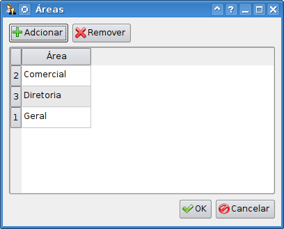
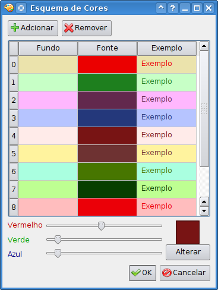
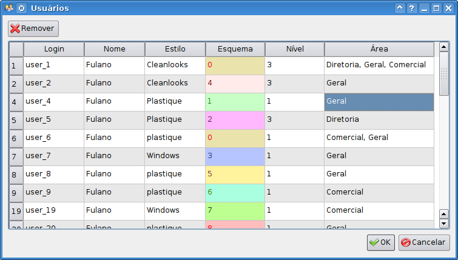

Reserva de Salas

|
Reserva de Salas |
|
|
 |
No diagrama à esquerda:
|
Baixar:
Compilar:
Copiar o binário:
|
|
||||
|
| root@localhost:/tmp/rs# /opt/firebird/bin/gsec
-user "SYSDBA" -password "masterkey" GSEC> add RS -pw rs GSEC> quit root@localhost:/tmp/rs# |
| C:\>
%ProgramFiles%\Firebird_2_0\firebird\bin\gsec -user "SYSDBA" -password
"masterkey" GSEC> add RS -pw rs GSEC> quit |
| root@localhost:~# /opt/firebird/bin/isql -d RS -ch ISO8859_1 -u SYSDBA -p masterkey -i rs.sql |
| root@localhost:~# /opt/firebird/bin/gbak -C -V -USER SYSDBA -PAS masterkey rs.fbk localhost:RS |
| Todos as salas cadastradas, também como todos os usuários que farão reservas devem ser alocados a uma ou mais áreas. Usuários que apenas consultarão o sistema não precisam. Para adcionar uma área, basta clicar no botão adcionar e uma nova linha na tabela aparecerá. Para alterar o nome de uma área, basta clicar duas vezes. Para remover, simplesmente clique em uma área e depois aperte o botão remover. Todas as alteralções só serão feitas após clicar-se no botão 'OK'; caso clique no botão 'Cancelar', as alterações erão descartadas. |  |
|
||
|
|  | Cada usuário do sistema recebe um esquema de
cores,
para que quando ele reserve uma sala, a reserva em si será
desenhada com o esquema de cores do usuário; assim
é
fácil identificar qual usupario é
responsavél por
qual reserva. Nesta tela apenas se cria os esquemas, na tela
de
Usuários é que se associa um usuário a
um esquema
de cores. Assim que um usuário é criado
no sistema,
o programa lhe associa á um esquema automaticamente,
tentando
fazer uma distribuição uniforme dos esquemas. Para alterar um esquema, clique na caixa com a cor a ser alterada, use os controles em baixo da tela para alterar a cor e clique em 'Alterar' quando estiver terminado. Todas as alteralções só serão feitas após clicar-se no botão 'OK'; caso clique no botão 'Cancelar', as alterações erão descartadas. |
|  |
| Não há um botão para
adcionar
usuários, já que os usuários
são
cadastrados automaticamente na primeira vez que usam o programa.
Logo, para adcionar usuários, basta rodar o
programa
logado como o usuário (já que o programa pega o
nome do
usuário a partir da 'conta' do sistema operacional).
Feito
isto, o usuário será cadastrado com
nivél '0 -
Apenas Leitura', um esquema de cores aleatório e
não
será associado a nenhuma área. O
primeiro
usuário a logar no sistema, no entanto, receberá
nivél '3 - Administrador' para que este possa cadastrar os
demis. Após um usuário logar no sistema pela primeira vez, um 'administrador' deve então alterar o nivel de '0 - Somente Leitura' para '1' ou '2' e associar-lo a uma área. Veja a seção Nivéis de Acesso para mais informações. O 'Estilo' é apenas o estilo de desenho da tela que o usuário escolheu. Apeas é mostrado aqui, só pode ser mudado pelo próprio usuário, e não muda nada do comportamento do sistema, apenas sua aparência. Todas as alteralções só serão feitas após clicar-se no botão 'OK'; caso clique no botão 'Cancelar', as alterações erão descartadas. |
|
||
|
||
|